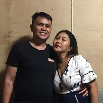
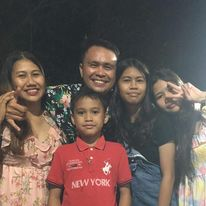
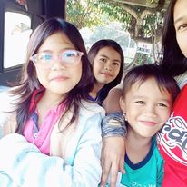

Hello, I'm Joy Abecia Tadena,34 years old, mother of my prescious children jolliane vic, kellian joy, and my one and only son kilian vic, a loving wife to my handsome husband vicrenmar tadena,a cellphone techinician and a hard working IT student. I live in Purok Nangka Brgy. 6 Buenavista Agusan del Norte. Excited to connect and explore opportunities where my skills and passion can make a meaningful impact!



Juggling the roles of a devoted mother, supportive wife, diligent student, and a dedicated working mom, my life is a tapestry of responsibilities and aspirations. Born and raised in Buenavista, I ventured into motherhood early, cherishing the joys and challenges it brought. Balancing the needs of three incredible children, I decided to embark on a journey of self-improvement. Enrolling in Saint Michael Colleges of Caraga as an IT student, I embraced the rigors of academia while managing the demands of family life. The decision to pursue education was fueled by a desire for personal growth and a commitment to being a role model for my children. Late-night study sessions and early morning school runs became the norm, illustrating the delicate dance between motherhood and academia. Simultaneously, I embraced the workforce, contributing to our family's livelihood. My professional journey, though not yet defined by a specific career path, is marked by determination and resilience. Every day, I navigate the delicate balance between deadlines at work and the tender moments at home. My husband, my anchor, provides unwavering support in this multifaceted journey. Together, we celebrate small victories and tackle challenges head-on, creating a foundation of love and understanding. As a family, we navigate the complexities of parenthood, cherish shared dreams, and build a home filled with laughter and warmth. This juncture in my life is a testament to the strength that comes from embracing diverse roles. I may not have a neatly defined professional title, but my journey is marked by the invaluable experiences gained from being a mother, a wife, a student, and a working mom. Each role contributes to the mosaic of my life, and I look forward to the chapters yet to unfold, where the pursuit of knowledge, the joys of motherhood, and the commitment to family will continue to shape my evolving narrative.
Fueling my passion for adventure, I find solace in the rhythmic hum of a single motorcycle's engine, exploring scenic routes that unveil the beauty of the open road. Cooking is my creative haven, where the kitchen transforms into a canvas for culinary experimentation, each dish a masterpiece of flavors. Beyond leisure, I channel my technical prowess into fixing phones, transforming a hobby into a livelihood. From revving engines to sizzling pans and intricate phone repairs, these pursuits not only define my leisure moments but also encapsulate the diverse facets of my hands-on, dynamic lifestyle.
Favorites
Savoring the crisp freshness of salads, I embrace the vibrant medley of greens and flavors that dance on my palate. Cinematic tales are my sanctuary, with movies transporting me to worlds of imagination and emotion. Fruits, nature's sweet gifts, are a daily delight, infusing my routine with health and vitality. Amidst the kaleidoscope of colors, pink resonates as my favorite hue, embodying grace and warmth. In this kaleidoscope of preferences, the crunch of salads, the magic of movies, the sweetness of fruits, and the gentle allure of pink intertwine to create a tapestry of joy in my everyday life.
From high school to college and into parenthood, my trio of friends defines lifelong companionship. High school buddy, our roots run deep, sharing adolescent dreams. College friend, navigating academic challenges and celebrating victories together. Co-parent confidante, supporting each other through the trials of raising a family. Three distinct connections, each weaving a unique thread in the tapestry of my life. Through the years, we've laughed, studied, and parented side by side. Different chapters, shared stories, and an unbreakable bond , my diverse circle of friends embodies the beauty of enduring friendships across various stages of life.